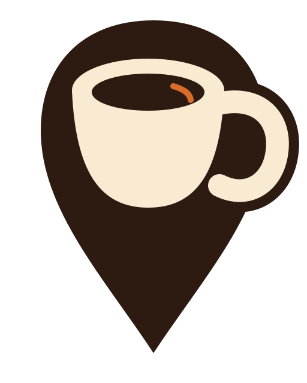

Brand system · v4
BrewMap
커피와 장소 탐색을 결합한 브랜드 아이콘, 지도 화면 마커, 라이트·다크모드 컬러 토큰을 한 페이지에 정리했습니다.
핵심 브랜드 에셋

지도 화면 카페 마커
공식 브랜드 컬러
Espresso
#2D1B12
Cream
#F8EBD2
Brew Orange
#D96B2B
다크모드 대안 컬러
Dark Roast
#140C08
Espresso Surface
#2D1B12
Cream
#F8EBD2
Bright Brew Orange
#F28A45
Muted Cream
#CDBEA6
Roasted Brown
#80604C
라이트·다크 적용 비교
사용 규격
메인 아이콘
앱 아이콘, 웹 대표 아이콘, SNS 프로필
기본 마커
지도 표시 높이 40–64px, 하단 중앙 앵커
선택 마커
표시 높이 64–80px, 오렌지 링 또는 헤일로
HTML 적용 예시
<link rel="stylesheet" href="/styles/brewmap-brand.css" />
<img
class="brewmap-brand-icon"
src="/assets/brewmap-brand-icon.svg"
alt="BrewMap"
/>
<img
class="brewmap-map-marker"
src="/assets/brewmap-cafe-marker.svg"
alt="카페 위치"
/>테마 적용 방식
<!-- OS 설정 자동 적용 -->
<html lang="ko">
<!-- 라이트모드 고정 -->
<html lang="ko" data-theme="light">
<!-- 다크모드 고정 -->
<html lang="ko" data-theme="dark">